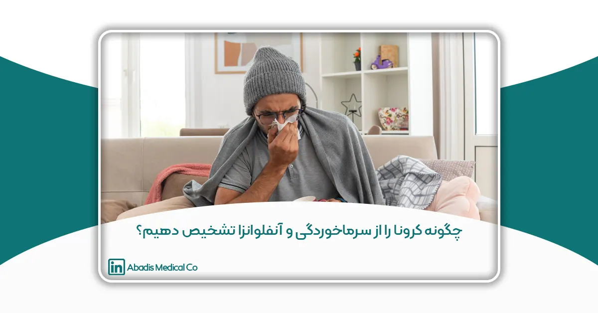

اکثر مردم فرق بین ویروس کرونا، سرماخوردگی و آنفلوانزا را تشخیص نمیدهند این باعث شده با هر علامتی فکر کنند به کرونا مبتلا شده اند.فصل زمستان امسال با شیوع ویروس کرونا در جهان و با وجود علائم مشترک بین ویروس کرونا و آنفلوانزا باعث شده است تا تشخیص آنها از یکدیگر برای مردم سخت شود.آب ریزش بینی، سرفه، گلودرد و تب، علائم مشابه در بیماریهای مختلفی هستند که در آغاز نمیتوان تشخیص داد که آیا ناشی از باکتری و یا ویروس است یا یک سرما خوردگی ساده. این باعث شده مردم با هر علائمی بترسند و نگران شوند اما نشانههایی وجود دارد که تشخیص این بیماریها را از یکدیگر راحتتر میکند.
راههای انتشار ویروس کرونا
ویروس کرونا از طریق تماس مستقیم با قطرههای تنفسی فرد آلوده (ازطریق سرفه و عطسه) و تماس با سطوح آلوده به ویروس منتقل میشود. ویروس COVID-۱۹ میتواند ساعتها روی سطوح زنده بماند و با یک ضدعفونی کنند قوی مانند الکل ازبین می رود.
علائم ویروس کرونا
تب کمتر از ۴۰ درجه سانتی گراد، سرفه (خشک)، گلو درد، لرز خفیف، احساس خستگی، احساس گرفتگی بینی، احساس ناراحتی در قفسه سینه، بی اشتهایی، نفس تنگی یا مشکل تنفسی، درد عضلات
علائم نادر ویروس کرونا
حالت تهوع و استفراغ، سردرد، اسهال، شکم درد، آب ریزش بینی، گرفتاری دستگاه تنفس تحتانی، بدون درگیری قسمتهای فوقانی در بیماری کرونا ویروس شایع است.
علائم آنفلوانزا
آنفلوانزا شما را یکباره زمین گیر میکند، سر و تمام اندام بدن فرد شروع به درد گرفتن میکند، سرفه خشک و خشکی گلو دارد. تب تا ۴۱ درجه سانتیگراد بالا می رود و غالباً همراه با لرز است و فرد احساس گرسنگی نمیکند.
تب و لرز، خستگی شدید، بدن درد، حالت تهوع، تب شدید, سردرد و درد عضلانی شدید در آنفلوآنزا از شیوع بالایی برخوردار است.
علائم سرما خوردگی ساده
در سرماخوردگی ساده، معمولا خارش گلو و آب ریزش بینی وجود دارد و بعدا سرفه شروع میشود. چندین روز طول میکشد تا علائم گلو درد، آب ریزش بینی، سرفه بلغم دار، یا سرفههای خشک، تب و سردرد ظاهر شده بهتر شوند. در این وضع گوشها وزوز میکنند و بیمار احساس ضعف میکند. توجه داشته باشید که آبریزش بینی شدید از علائم سرماخوردگی است .